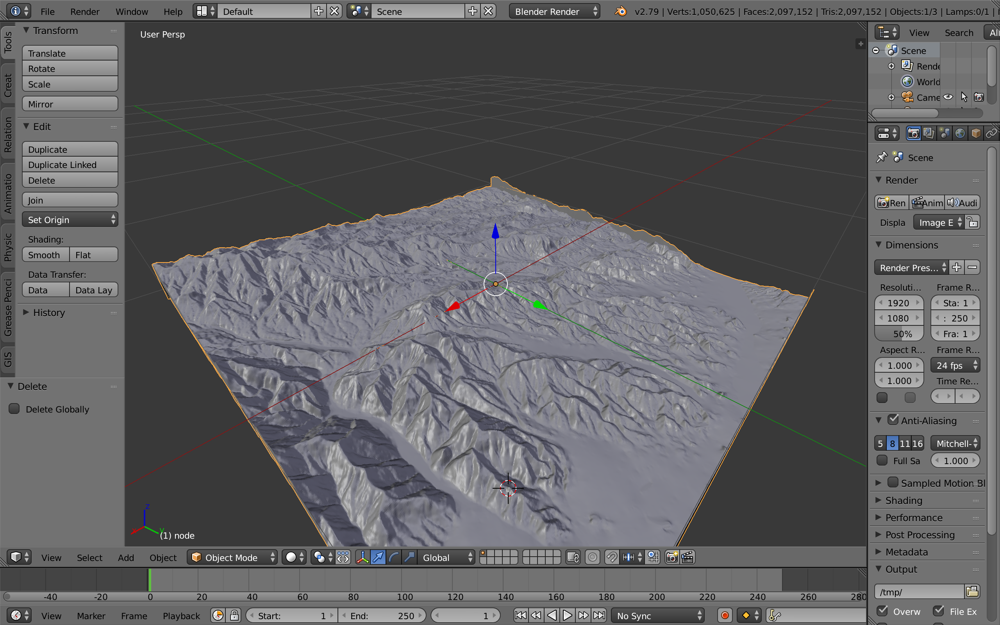
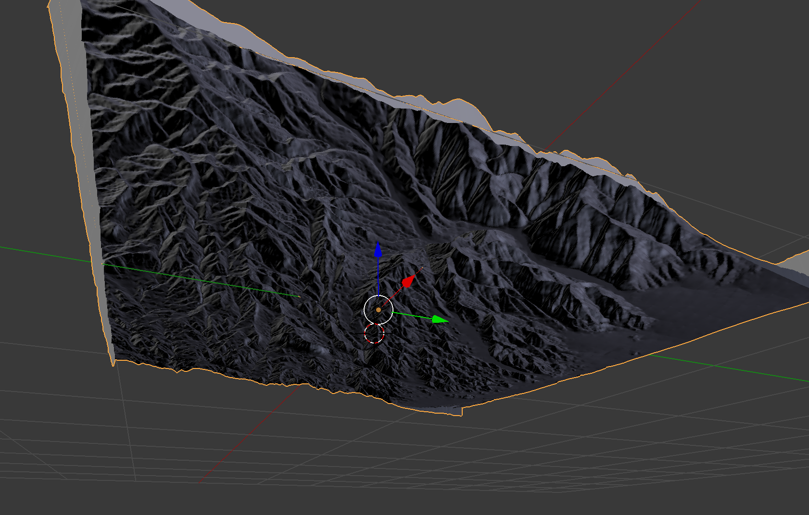
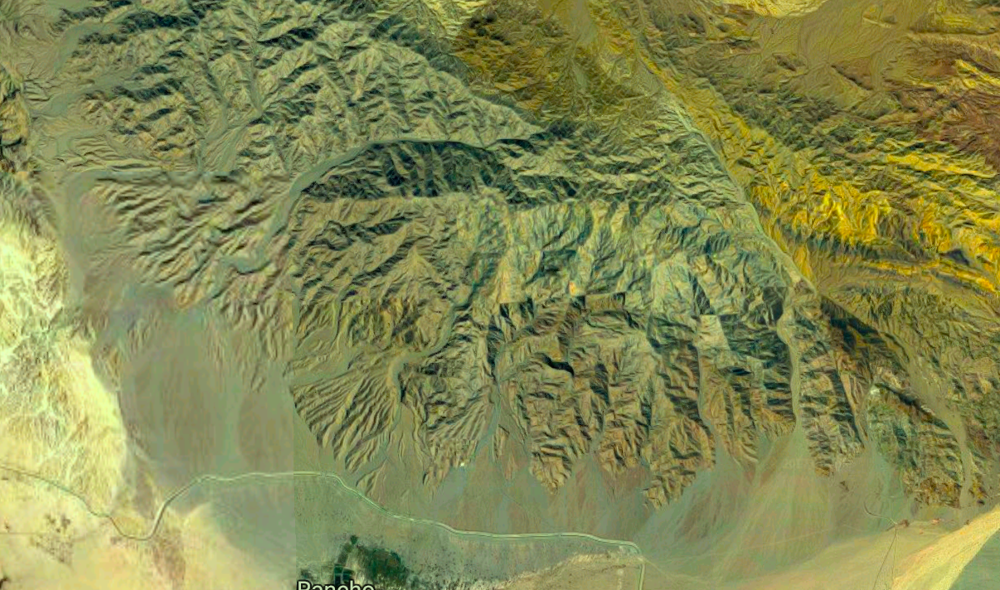

The Palace (B.F8/9)
  Textual Evidence: Damaging of B.F8/9
"In the spring of 1998 illegal construction on the eastern outskirts of Polis Chrysochou (Ancient Marion/Arsinoe) brought to light and largely damaged the remains of an impressive Cypro-Archaic building, a find previously unparalleled by the otherwise rich discoveries made since 1083 by of the Princeton University Archaeological Expedition excavations to Polis Chrysochou, directed by Professor William Childs. The deplorable extent of the destruction, the nature of the ruins, and their size dictated immediate action and a systematic salvage excavation was immediately incorporated in the research program of the Princeton excavations" (Papalexandrou, 2006).
Textual Evidence: Strategic Location
"It may not be accidentally that the building is within easy reach from the road that leads east-northeast from Polis towards Soli and the nearby mines of Limni and Kinousa at the northwest foothills of Troodos. If the line of this road can indeed be traced bak to antiquity, our building [B.F8/9] may have been strategically located in relationship to it. Regarding the posting of the building, it is interesting that it is "tucked away" along the abrupt cliff of the plateau and immediately above it, overlooking the narrow, fertile valley of Koilada, which lies between the Peristeries plateau and the Evretades plateau to the east" (Papalexandrou, 2006).
"Although its interpretation as a "palace" can only be tentative, its overall nature and the details of construction provide new ways to think about the emergence of state and centralized power structures in Marion and other areas" (Papalexandrou, 2006).
The spatial and symbolic contiguity between the "palace" and the important nearby sanctuary of Peristeries, whose major phase of development in the sixth century, is very important. As in Amathus, the sanctuary was dedicated to the great fertility goddess of Cyprus, or at least this is suggested by a terracotta figurine in the type of a breast-holding Astarte. A rich assemblage of pottery and thousands of terracotta votives indicate that this establishment was the scene of intense cultic activities from the eighth century onwards until its destruction by fire at the end of the sixth century. Moreover, as Joanna Smith has shown, the sanctuary was a center "for the conspicuous consumption of display of wealth as well as the production and storage of valuable commodities. In other words, the cultural energy expended in the sanctuary rendered it a context for the symbolic construction and legitimation of social and political identities. This religious establishment has not to be considered against the backdrop of the imposing structure to the south [B.F8/9], which was surely part of the same complex. Its bulk and its structural sophistication point to the pretensions of the authorities that patronized the sanctuary and the land around it. It is interesting that the symbiosis of sanctuary and palace in the Peristeries plateau conforms to a Near Eastern model that features the coexistence of a physical center of political, administrative, or economic power with a major civic sanctuary that dominates the environment of the state's urban center. In Cyprus this coexistence is in one way or another parallel in Amathus, Vouni, Idalion, and perhaps Soli and points to the mutually reinforcing interrelationship, or even identity, between poetical power and religious structures" (Papalexandrou, 2006)
"Of equal importance is the physical contiguity of this structure with an area that was intensely used for elite burials. The rocky slopes below the east side of the building and, in general, the areas to the east, south, and southeast of Peristeries, were used for a large number of rock-cut chamber tombs in which the local elite buried their dead with sumptuous ceremonies from Geometric period onward. The erection of the sizable structure at Peristeries intentionally transformed the ambiance of this necropolis, forming a new and imposing backdrop for the performance of the funereal rites of the rich and powerful" (Papalexandrou, 2006).